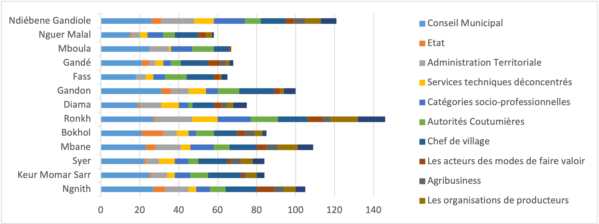
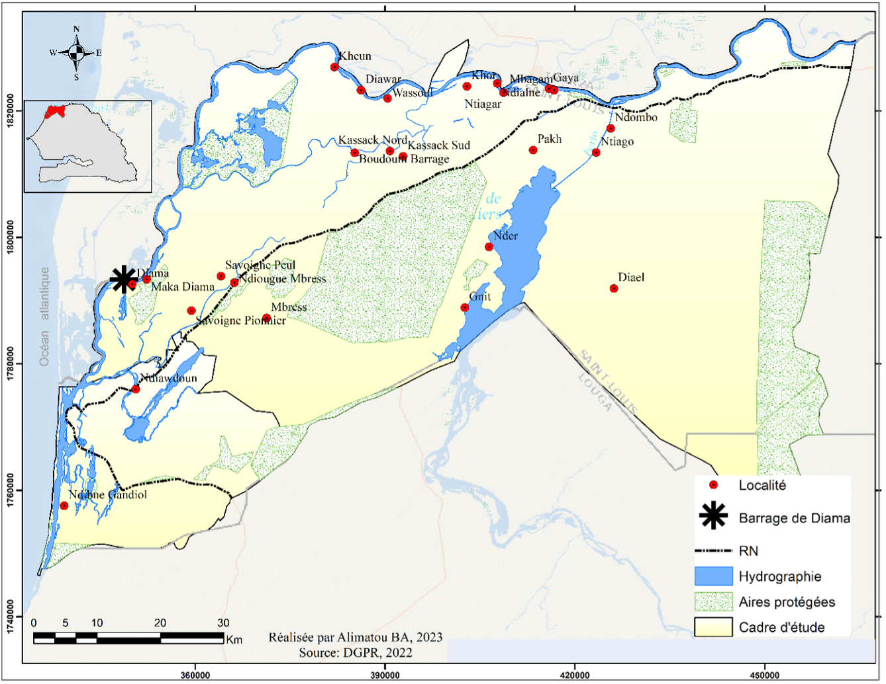
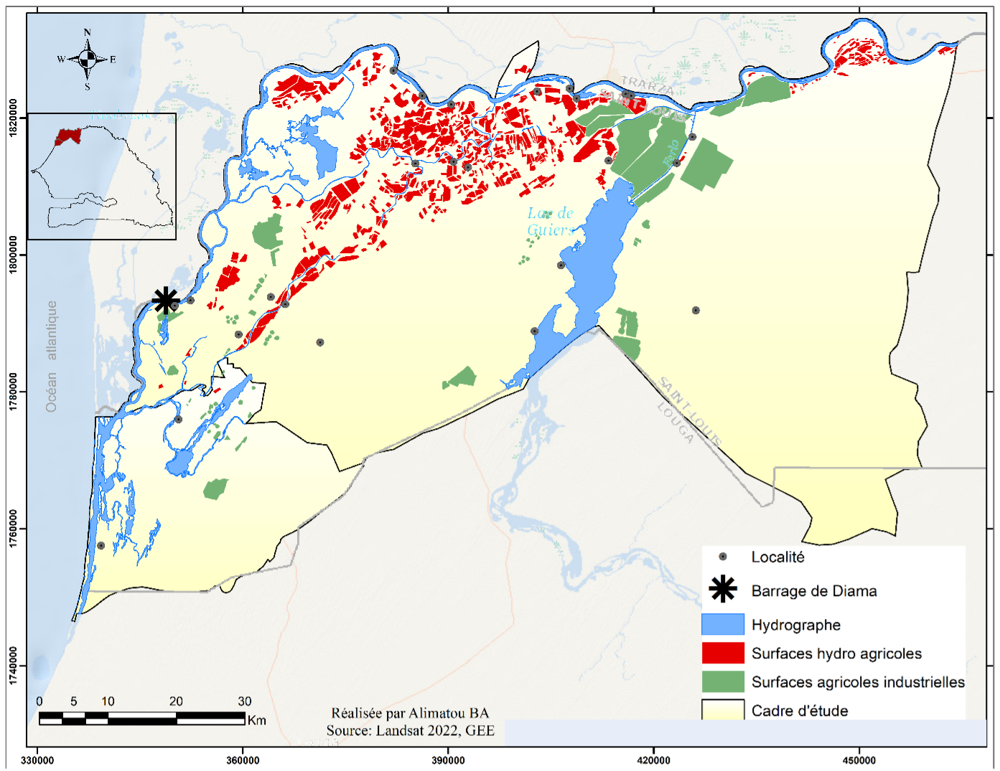
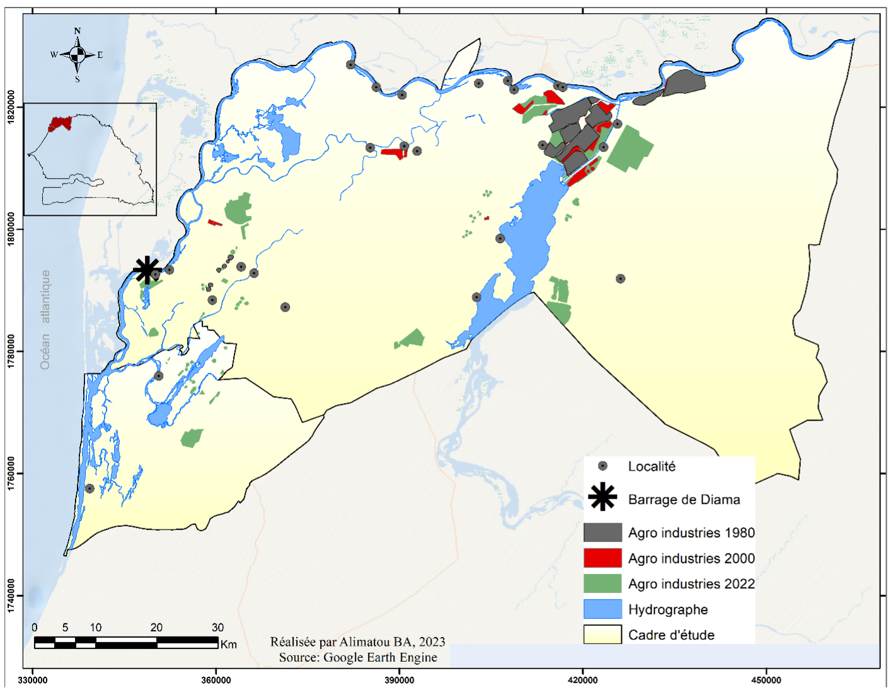
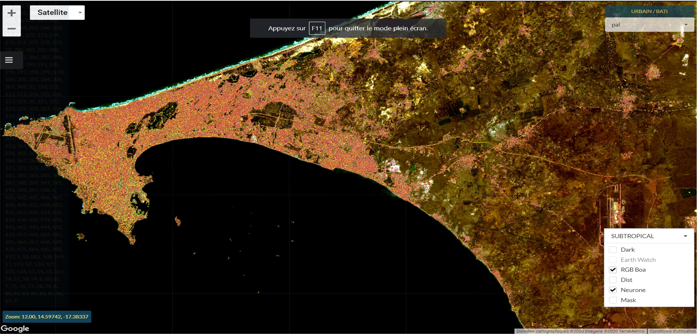
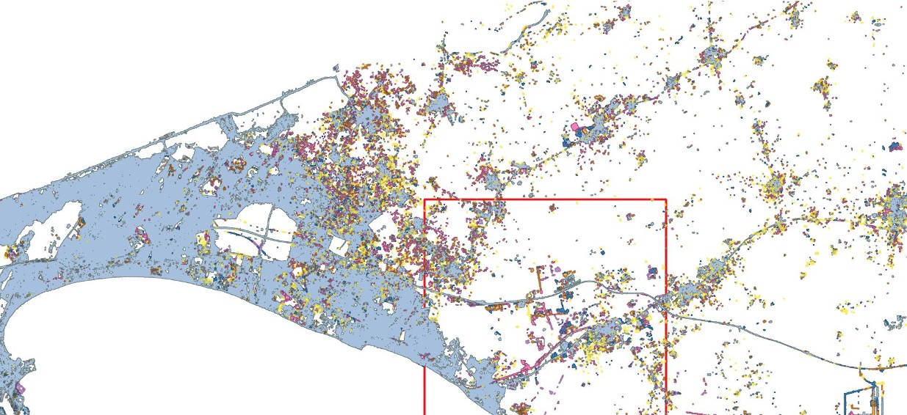
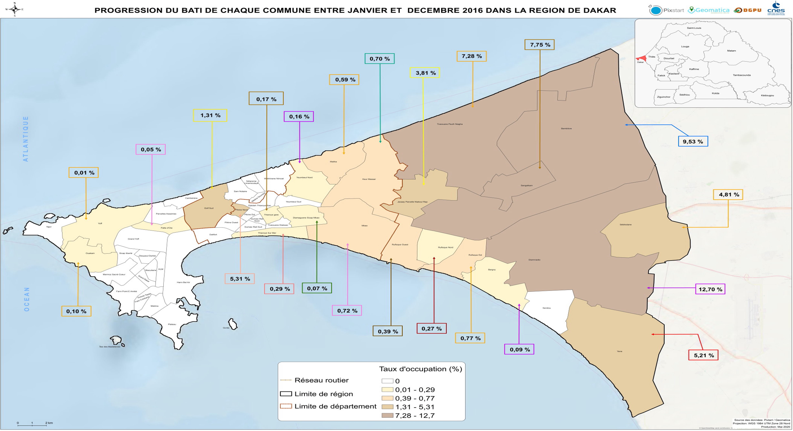
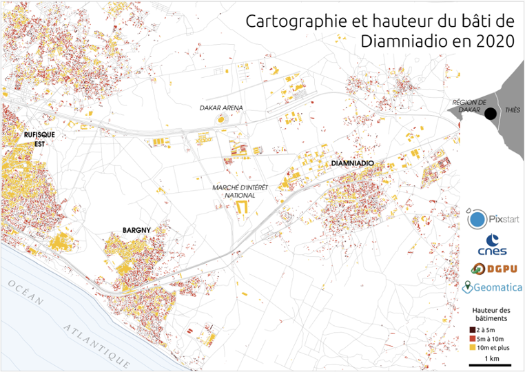

Travaux de recherche
Travaux de recherche
Contexte
- Droit coutumier vs Droit positif
- Outils de gestion/régulation fonciere: PAOS, SIF, CDI
- Rapports entre les pratiques fonciéres et la loi
- Conflits fonciers, plusieurs echelles de médiation/résolution
- Processus de mise en place et apports des outils
Objectifs
- Analyser les différents systèmes de tenure foncière et leurs impacts sur les droits des communautés locales.
- Analyser la typologie et des modes de résolutions des conflits fonciers dans la région de Kaolack.
- Étudier la dynamique spatio temporelle de l’occupation et de l’usage des terres
Resultats
 

Contexte
- Stratégies d’implantations des agro industries
- Marché foncier
- Impacts sur l’agriculture familiale
Methodologie
- Collecte de données: collectivités territoriales, agriculteurs, éléveurs
- Cartographie
- Télédétection(dynamique surfaces agricoles)
Resultats
  
Dynamique spatio-temporelle et les formes de valorisation du typha dans le delta du fleuve Sénégal
Étude cartographique des biomasses de typha disponibles dans la zone de Rosso Mauritanie(en cours)
Contexte
Le typha, macrophyte aquatique à prolifération rapide est une plante locale qui se développe sur les berges du fleuve Sénégal. Sa prolifération rapide par le concours de plusieurs circonstances à des impacts sur l’environnement et sur l’agriculture et la pêche, activités exercées à Rosso Mauritanie. Afin de réduire les effets indésirables de la présence du typha, de plus en plus, il est considéré comme une ressource du fait des nombreuses potentialités qu’il offre. En effet, l’utilisation de produits dérivés du typha par les populations (pour la construction et dans les tâches), est une alternative aux autres sources d’énergies.
Methodologie
L’utilisation des images satellitaires Sentinel a permis de faire une analyse des différentes unités d’occupation du sol. 5 898 ha sont occupés par le typha dans la zone de Rosso. Le découpage de la zone d’étude en trois sous-zones (Nord-Est, Est et Ouest) a permis d’avoir un aperçu sur les espaces à forte concentration de typha. Ce travail a permis, après une consultation des acteurs, de sélectionner trois sites pour la cartographie fine et l’échantillonnage du typha. Il s’agit : de Rgheiwatt, du Village des Pêcheurs et de Tounguène. Les observations faites sur la base des images de drone montrent que le typha est plus présent dans la zone Nord-Est de Rosso.
Resultats


Suivi satellitaire de la dynamique des grandes métropoles africaines – application au pôle urbain de Diamniado
Contexte
- Dakar, grand monstre urbain
- Extension urbaine
- Pole urbain de Diamniadio et Lac urbain
- Valorisation fonciere/ changements usages des terres
Resultats
   
Les territoires du sel - Karalan sy
Accidents de la route - Emmanuel Bonnet, Robien, Laetitia
Labaly Toure, Boubou Aldiouma Sy ,2022, Cartographie par télédétection optique des variations spatiotemporelles (2000-2021) de la couverture végétale des paysages forestiers de la région de Sédhiou (moyenne Casamance), Revue de géographie du laboratoire Leïdi –_« Dynamiques des territoires et développement » Université Gaston Berger, Saint Louis du Sénégal, numéro 28, décembre 2022, ISSN 0851 – 2515, 198-260
Jeremy Bourgoin, Djibril Diop, Labaly Toure , Quentin Grislain, Roberto Interdonato, Mohamadou Dieye, Christian Corniaux, Julien Meunier, Djiby Dia, Sidy M. Seck, 2022, Beyond controversy, putting a livestock footprint on the map of the Senegal river Delta, Land use, https://doi.org/10.1016/j.landusepol.2022.106232
Marie-Christine Cormier-Salem, Labaly Toure, Mathilde Fabre, Yasmin Bouaita, Boubacar Ba Mamadou El Abass et Élisabeth Habert, SIRENA, une plateforme participative au service de la gouvernance du delta transfrontalier du fleuve Sénégal, Revue d’ethnoécologie, https://doi.org/10.4000/ethnoecologie.2653
Labaly Toure, Olivier Ruë, Luc Descroix, Yasmin Bouaita, S. Niang, et al., 2016, Des cartes et des atlas comme outils de gouvernance : une application aux zones littorales d’Afrique de l’Ouest, Actes du Colloque (Colloque international du Laboratoire Mixte International “Patrimoines et Territoires de l’Eau”, Saint Louis , 11 -14 mai 2016 ), Paris –L’Harmattan– pp.227-240- ird-01555891
Fatou Diop, Labaly Toure,2012 , Contribution du système d’information géographique(SIG) dans la lecture du problème de l’accès des femmes au foncier rural au Sénégal : Cas des communautés rurales de KeurMomarSarr, Médina Ndiathbé(Vallée et Zone sylvo pastorale), Diender (Niayes), Bandafassi (Sénégal Oriental), Diendé (Casamance), Revue de géographie du laboratoire Leïdi_« Dynamiques des territoires et développement » Université Gaston Berger, Saint Louis du Sénégal, numéro 10, décembre 2012, ISSN 0851 – 2515, 345-369
Labaly Toure, Dah Dieng, 2010, Revue de géographie du laboratoire Leïdi _« Dynamiques des territoires et développement » Université Gaston Berger, Saint Louis du Sénégal, numéro 08, décembre 2010, ISSN 0851 – 2515, 33-44
Bégué Agnès, Leroux Louise, Soumaré Mamy, Faure Jean-François, Diouf Abdoul Aziz, Augusseau Xavier, Touré Labaly, Tonneau Jean-Philippe. 2020, Remote sensing products and services in support of agricultural public policies in Africa: Overview and challenges. . Frontiers in Sustainable Food Systems, 4:58, 11 p. https://doi.org/10.3389/fsufs.2020.00058
Bourgoin Jeremy, Valette Elodie, Diop Djibril, Adamczewski Amandine, Dia Djiby, Touré Labaly. 2016. In Le delta du fleuve Sénégal : quel modèle agricole ? In : Une nouvelle ruralité émergente : Regards croisés sur les transformations rurales africaines, Pesche Denis (ed.), Losch Bruno (ed.), Imbernon Jacques (ed.). Montpellier : CIRAD-NEPAD, pp. 52-53. ISBN 978-2-87614-718-8
Atlas des dynamiques observées dans le bassin de collecte de la Laiterie du Berger. Bourgoin Jeremy (ed.), Corniaux Christian (ed.), Touré Labaly (ed.), Cesaro Jean-Daniel (ed.). 2019. Dakar : CIRAD, 48 p. ISBN 978-2-87614-745-4
Projet GEOforAGRI : Etude de faisabilité pour un projet de renforcement de l’utilisation de l’imagerie satellitaire en appui aux politiques publiques agricoles et de gestion durable des ressources, en Afrique de l’Ouest. Tonneau Jean-Philippe, Augusseau Xavier, Leroux Louise, Faure Jean-François, Bégué Agnès, Touré Labaly, Ouattara Tiodionwa, Dio Jean-Saturnin, Lelong Camille, Leroy Marc, Mertens Benoît, Pinet Camille, Grinand Clovis. 2018. Montpellier : CIRAD-AFD, 59 p.
Le Delta du Fleuve Sénégal : quel modèle de développement agricole. Bourgoin Jeremy, Valette Elodie, Diop Djibril, Adamczewski Amandine, Dia Djiby, Touré Labaly. 2017. In : Le pastoralisme dans le courant des changements globaux : Défis, enjeux, perspectives. Livre des résumés P2CG 2017 = Pastoralism in the current of global changes: stakes, challenges and prospects. Book of abstracts P2CG 2017. Diao Camara Astou (ed.), Taubourdeau Simon (ed.). ISRA, CIRAD, PPZS. Dakar : PPZS, pp. 140-141. Colloque sur le Pastoralisme dans le courant des changements globaux (P2CG 2017), Dakar, Sénégal, 20 November 2017/24 November 2017.
Christian Castellanet Souleymane Diallo Labaly Toure Minh Cong Le Cuan Guillaume Boisset Aline Hubert Aminata Ndir, 2018, Etude pour l’évaluation des ďesoins pour le contrôle du typha dans le delta du fleuve au Sénégal et en Mauritanie, OMVS https://cda-omvs.org/wp-content/uploads/2019/03/14864_Rapport-d%E2%80%99%C3%A9tat-des-lieux-et-bilan-des-m%C3%A9thodes-de-lutte-contre-le-typha_GRET.pdf
Charl-Thom Bayer, Mercedes de los Santos, Seydi Aliou Tall , Labaly Toure, ,2022. Rapport sur l’état de l’information foncière au Sénégal https://landportal.org/node/112678